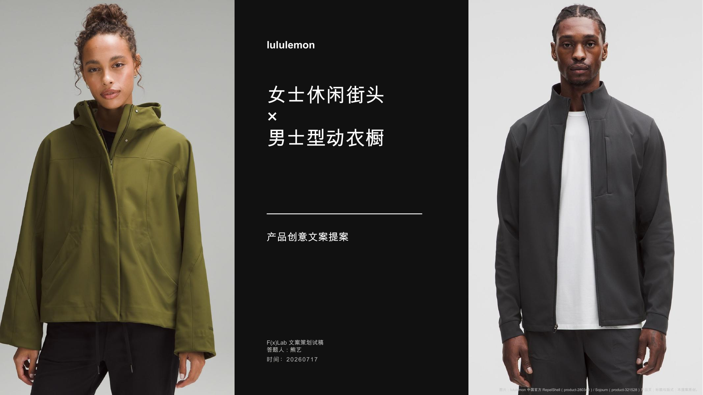

F(x)Lab × lululemon
以「女士休闲街头」与「男士型动衣橱」为命题完成的产品创意文案提案。项目从品牌感知、产品体验与官方语言样本出发，将服装功能转译为可感知的生活场景，并完成创意命题、主文案、英文副标题与视觉提案。
F(x)Lab 文案策划试稿 · 2026.07 · 独立完成

调研如何进入创意
先拆解品牌、产品与语言三个层面：品牌强调身体感受先于参数，产品表达避免孤立罗列技术，语言则以短标题、动词和感受词建立留白。最终形成两条由产品依据支撑的表达路径。
女士休闲街头
围绕路线、层次、轮廓与行动之间的选择，将Wunder Puff、RepelShell与Sleek City的产品体验收束为「街头在变，穿法留有余地」。
男士型动衣橱
从利落外层、活动空间和针织层次出发，把Sojourn、Zeroed In与Sojourn Knit转译为「用服装的层，接续生活的程」。
最终文案
上街，留点转身余地。
ROOM TO MOVE. YOUR STREET, YOUR WAY.
轻暖叠出层次，防护融入日常，利落剪裁为动作留出空间。熟路照走，临时转个弯也好，穿上就走，街头不止一种走法。
轻暖叠出层次，防护融入日常，利落剪裁为动作留出空间。熟路照走，临时转个弯也好，穿上就走，街头不止一种走法。
一层，接一程。
ONE LAYER. EVERY MILE.
利落外层跟上动作，针织层次接入日常。穿好这一层，继续下一程。
利落外层跟上动作，针织层次接入日常。穿好这一层，继续下一程。